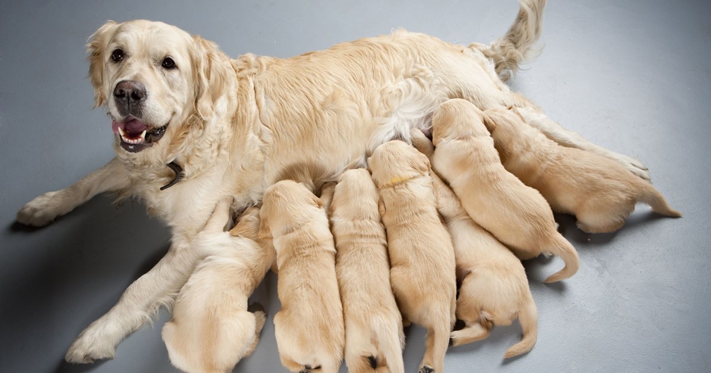

REPRODUCCION DE LOS PERROS

Los perros son animales vivíparos porque las crías se desarrollan dentro del útero de la madre. Su madurez sexual se desarrolla entre los 6 y los 12 meses de vida tanto en los machos como en las hembras, aunque en algunas razas grandes puede retrasarse hasta los 2 años. Las hembras entran en celo 2 veces al año y durante este período están receptivas sexualmente. Durante el celo una hembra puede ser copulada por varios machos, por lo que sus crías pueden tener diferentes padres.
La gestación de las perras dura entre 58 y 68 días y la cantidad de crías que nacen por camada varía según la raza: las razas más grandes tienen entre 8 y 12 crías por parto, las razas medianas tienen entre 6 y 7 crías y las más pequeñas entre 2 y 4 crías. El tiempo entre el nacimiento de un cachorro y de otro puede variar desde los 15 minutos a las 6 horas.
Una vez nacidos los cachorros la madre los limpiará y amamantará. Pasado un mes la hembra cada vez amamantará menos a los cachorros por lo que se deberá alimentar a los cachorros con productos especiales para el destete. El destete definitivo de los cachorros será entre los 45 y 60 días de edad (2 meses), momento en el que ya comerá de forma exclusiva pienso específico para cachorros con sus necesidades.